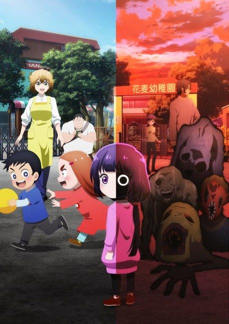
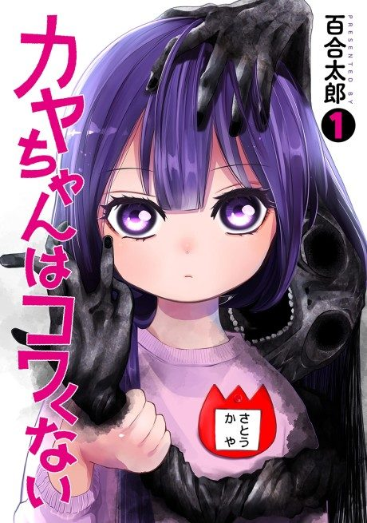

Kaya-chan Isn't Scary
カヤちゃんはコワくない
We haven't found where the anime ends in the manga yet.
7.2AniList score
—Animeter, no votes yet
12episodes
Anime finished. Where does the manga pick up?
StatusNo source yet
We looked for where the anime ends in the manga but found no source we trust yet. The manga is still running.